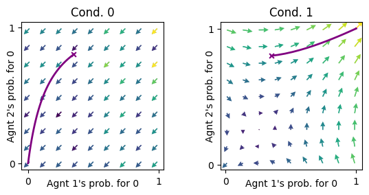
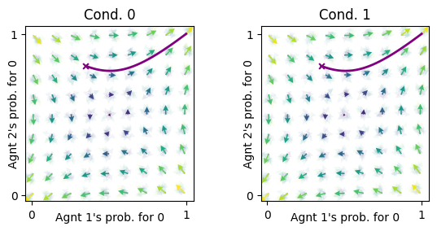
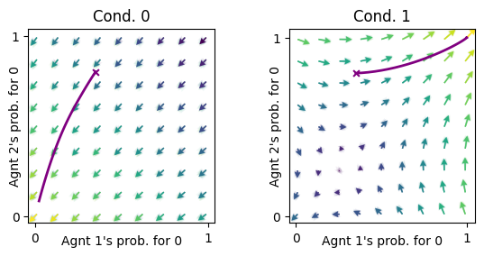
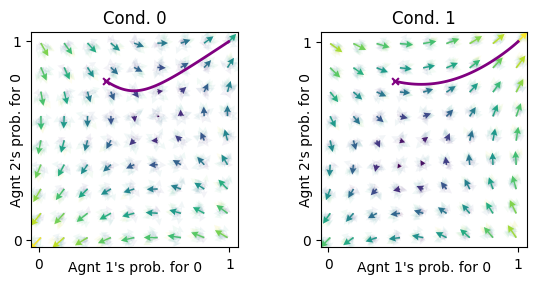

from pyCRLD.Environments.UncertainSocialDilemma import UncertainSocialDilemma
from pyCRLD.Environments.SocialDilemma import SocialDilemma
from pyCRLD.Agents.POStrategyActorCritic import POstratAC
from pyCRLD.Agents.StrategyActorCritic import stratAC
from pyCRLD.Utils import FlowPlot as fp
import numpy as npUncertain Social Dilemma
Class for two states social dilemma with partial observing agents
Example
Full observation
An example for a two states Prisonners Dilemma, first without observation noise.
env_fullObs = UncertainSocialDilemma(R1=5, T1=6, S1=-1, P1=0, R2=5, T2=2, S2=-1, P2=0, pC=0.5, obsnoise=0)
mae_fullObs = POstratAC(env=env_fullObs, learning_rates=0.1, discount_factors=0.9)
pc00, pc01, pc10, pc11 = 0.35, 0.35, 0.8, 0.8
X = [[[pc00, 1-pc00], #initial policy to visulize learning trajectory
[pc01, 1-pc01]],
[[pc10, 1-pc10],
[pc11, 1-pc11]]]
X = np.array(X)
xtraj, fixedpointreached = mae_fullObs.trajectory(X)
x = ([0], [0,1], [0]) # Plotting on the x-axis the [0]'s agents probability in both observations [0,1] to cooprate [0]
y = ([1], [0,1], [0]) # Plotting on the y-axis the [1]'s agents probability in both observations [0,1] to cooprate [0]
ax = fp.plot_strategy_flow(mae_fullObs, x, y, flowarrow_points = np.linspace(0.01 ,0.99, 9), NrRandom=16)
fp.plot_trajectories([xtraj], x, y, cols=['purple'], axes=ax);
In state 0 both agents learn to defect. In state 1 they learn to cooperate if their initial cooperation prpability is not to low.
If we use the stratAC class instead of the POstratAC class, nothing changes because there is no observation noise.
mae_fullObs_strat = stratAC(env=env_fullObs, learning_rates=0.1, discount_factors=0.9)
xtraj, fixedpointreached = mae_fullObs_strat.trajectory(X)
ax = fp.plot_strategy_flow(mae_fullObs_strat, x, y, flowarrow_points = np.linspace(0.01 ,0.99, 9), NrRandom=16)
fp.plot_trajectories([xtraj], x, y, cols=['purple'], axes=ax);Random observation
What happens when in each state the agents think they are in the true or in the other state with the same propability?
env_randObs = UncertainSocialDilemma(R1=5, T1=6, S1=-1, P1=0, R2=5, T2=2, S2=-1, P2=0, pC=0.5, obsnoise=0.5)
mae_randObs = POstratAC(env=env_randObs, learning_rates=0.1, discount_factors=0.9)
xtraj, fixedpointreached = mae_randObs.trajectory(X)
ax = fp.plot_strategy_flow(mae_randObs, x, y, flowarrow_points = np.linspace(0.01 ,0.99, 9), NrRandom=16)
fp.plot_trajectories([xtraj], x, y, cols=['purple'], axes=ax);
The learning trajectories in both states are the same. In both states the agents can learn to defect or to cooperate, depending on the inital policy.
Uncertain observation
How does a high observation noise of 0.45 (hence the it is still more probable to observe the true state) influence the learning dynamics compared to a low observation noise of 0.2?
env_bituncertObs = UncertainSocialDilemma(R1=5, T1=6, S1=-1, P1=0, R2=5, T2=2, S2=-1, P2=0, pC=0.5, obsnoise=0.2)
mae_bituncertObs = POstratAC(env=env_bituncertObs, learning_rates=0.1, discount_factors=0.9)
xtraj, fixedpointreached = mae_bituncertObs.trajectory(X)
ax = fp.plot_strategy_flow(mae_bituncertObs, x, y, flowarrow_points = np.linspace(0.01 ,0.99, 9), NrRandom=16)
fp.plot_trajectories([xtraj], x, y, cols=['purple'], axes=ax);
For a low noise the dynamics are close the the dynamics for full observation.
env_veryuncertObs = UncertainSocialDilemma(R1=5, T1=6, S1=-1, P1=0, R2=5, T2=2, S2=-1, P2=0, pC=0.5, obsnoise=0.45)
mae_veryuncertObs = POstratAC(env=env_veryuncertObs, learning_rates=0.1, discount_factors=0.9)
xtraj, fixedpointreached = mae_veryuncertObs.trajectory(X)
ax = fp.plot_strategy_flow(mae_veryuncertObs, x, y, flowarrow_points = np.linspace(0.01 ,0.99, 9), NrRandom=16)
fp.plot_trajectories([xtraj], x, y, cols=['purple'], axes=ax);
Only for relatively high noise we clearly see its influence.